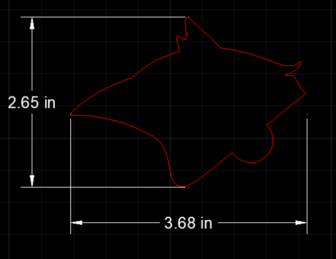
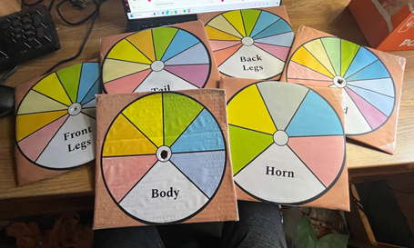

Prototyping, Testing, and Final Design of the Game
Our station was decided to be composed of two main sections. The first will be the build section while the second is the testing station. Each of these experienced its own version of the design cycle as prototypes, testing, and new designs were implemented.
Build Station:
The biggest decision that needed to be made in regard to what the children will be using to make their creatures was the material:
\- 3D Printing Filament-> capture interest but cost more than our budget allowed
- Cardboard -> cheap and allowed many parts to be made with the possibiliity of children taking their creatures home but was too flimsy and shapes would be too inaccurate
- Laser Cut Wood -> relatively cheap, sturdy, precise measurements, easily decorated
Therefore, laser cutting with wood was settled on as the ultimate material and method.
Five main types of parts were drawn using AutoCAD: body, head, front legs, back legs, horns, and tails. Clip art images were imported into AutoCAD so that, using the curve function, each animal could be traced. Puzzle piece connectors were then added to the separating region of the different types of parts. For example, the head and neck were separated. Unique circles were created for each category of separation, but those types of circles were kept uniform across animals. This means that every puzzle piece shape separating the head and body was the same but also differed from the other separating regions, such as the body and legs. Dimensions were tested and adjusted so that every individual piece was greater than three centimeters in length and height.
Once the dimensions were set and checked, pieces were separated and arranged so that more of the AutoCAD template could be filled. The goal was to create as many pieces as possible so the drawings were arranged to fit the most within a 12-by-12-inch board. This allowed us to utilize our budget. In total, 38 total parts were created!
The clipart images used to trace the parts was then edited to have different colors and textures so that they could be printed and mod podged to the wood, but have a variety of features. There were six bodies, nine legs, eleven heads, four horns, and eight tails but each had a different feature distinguishing it from the rest.

Testing Station:
Originally, the prototype consisted of many buttons, each one mapped to a different body part. However, this proved to be very inaccurate in reading user presses. This also proved to be too complex for the final model since dozens of buttons and wires would be needed to read the number of possible body parts the user could choose from since this expanded from the initial amount set. These issues eventually led to the abandonment of the buttons. In its stead, we decided to use potentiometers as dials to allow the user to select the body part in that way. Potentiometers are just variable resistors, meaning that the RedBoard could read each change in the resistance when the user turns the dial. Since the RedBoard can read a wide range of resistance values from the potentiometers, we used the map function to map certain ranges of resistance of the potentiometers to specific body parts. Each body part we had was assigned a score.
After the code reads the user’s inputted dial configuration, it checks which body parts the user selected, and assigns a score from 1 to 5, depending on how well that body part would aid the creature in surviving the alpines. These scores are added to the final score. After this step, each combination in different body parts is checked, where if a combination is valid for the selected creature, points are either awarded or subtracted. The code will award -15 to 15 points per combination. These points are added to the final score!
In the end, the score is converted into a readable output for the user in the form of the LED strip. If the score is below 20, the LED’s light up red and the creature would not survive well. If the score is above 20 or below 40, the LED’s will light up yellow and the creature would have a somewhat likely chance to survive. If the score is above 40, the creature would have a high likelihood to survive in the alpines. This is conveyed not only through color, but the number of LED’s that light up, lighting up from right to left in a sequential pattern.